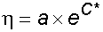
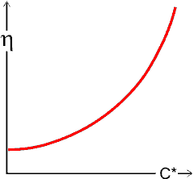
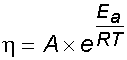
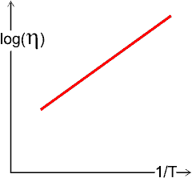

Gum arabic
Hydrocolloids are gums added to foodstuffs to control their functional properties, such as thickening or gelling.
 Introduction to polysaccharides
Introduction to polysaccharides
 Mixtures of hydrocolloids
Mixtures of hydrocolloids
 Effect on viscosity
Effect on viscosity
 Hydrocolloid action
Hydrocolloid action
 Hydrogels
Hydrogels
 The DLVO theory
The DLVO theory
Colloids are polymer solutions, hydrophilic networks, emulsions, micelles, vesicles, liposomes, aerosols, foams, and similar materials. Proteins and nucleic acids are colloids, and membranes can form colloids, with all of these being dealt with on other pages. Colloids are heterogeneous systems with at least two phases, one having dimension(s) between a few nanometers and a few micrometers. Colloids are distinguished by their inability to pass through 'dialysis' membranes. Most colloids get drawn into the gas-liquid interface [2679] and are, therefore, somewhat surface active. Proteins, therefore, are liable to denaturation if shaken to a foam.
Water binding at 20°C, from [1815]
Hydrocolloids [227], often called gums,a are hydrophilicb polymers, of vegetable, animal, microbial or synthetic origin that generally contain many hydroxyl groups and may be polyelectrolytes. They are naturally present or added to control the functional properties of aqueous foodstuffs. Most important amongst these properties are solubility [2560], viscosity (including thickening and gelling), and water binding (see right [1815]). Also significant are many other properties, including organoleptic, emulsion stabilization [3565], and prevention of ice recrystallization. The degree with which the hydrocolloid solutions mix with saliva, determined by their degree of chain entanglement, determines flavor perception [1050].
Other more specialist applications include adhesion, suspension, flocculation, foam stabilization, and film formation. Foodstuffs are very complex materials, and this, together with the multifactorial functionality of the hydrocolloids, has resulted in several different hydrocolloids being required. The most useful hydrocolloids are listed below.
Each of these hydrocolloids consists of mixtures of similar, but
not identical, molecules and different sources, preparative methods,
thermal processing, and foodstuff environment (for example, salt
content, pH, and temperature) all affect the physical properties
they exhibit. Descriptions of hydrocolloids often present idealized
structures, but it should be remembered that they are natural products
(or derivatives) with structures determined by stochastic enzymic
action, not laid down precisely by the genetic code. They consist of mixtures of molecules with different relative molecular mass (molecular weight)s. No two molecules are likely to be conformationally identical or even
structurally identical (cellulose excepted)
to any other. [Back to Top  ]
]
Osmotic pressure variation, from [1493]
Many hydrocolloids are polyelectrolytes; for example alginate, carrageenan, carboxymethyl-cellulose, gum arabic, pectin, and xanthan gum. The charged groups ensure strong hydration, particularly on a per molecule basis. The presence of counterions and co-ions (ions with the same charge as the polyelectrolyte) introduce complex behavior that is ion-specific and depends on the concentrations of all ionic solutes [1473]. A proportion of the counterions remain tightly associated with the polyelectrolyte, being trapped in its electrostatic field and reducing their activity and mobility, with the non-ideality of the solutions increasing on dilution down to very low levels as the associated proportion of the counterions increases. Their behavior changes when the concentration of the polyelectrolyte necessitates the overlap of their structures [1493]. The distinction between strong and weak polyelectrolytes has been clarified based on single-molecule force spectroscopy (SMFS) [4398]. Unsurprisingly, the strong polyelectrolyte with a more considerable ionization degree has a more extended conformation and greater bound water content.
The structures and properties (e.g., such as chain conformation, hydration, stiffness, surface wettability, lubricity, adhesion, and protein adsorption) of both strong and weak polyelectrolytes vary with pH. Weak polyelectrolytes containing weak acid or basic groups (such as carboxylates and primary amines) vary primarily due to the pH-controlled proton association/dissociation equilibria of their acidic or basic groups. These pH-controlled proton association/dissociation equilibria are not effective with strong polyelectrolytes containing strong acid or basic groups (such as, sulfonates and quaternary amines). However, there are still significant changes with pH due to the pH dependence of interchain hydrogen-bonding interactions [3183].
The reduced viscosity of such solutions increases on dilution as the polyelectrolyte chains stiffen. These properties of polyelectrolytes are more noticeable as the linear charge density (number of charged groups per unit length) increases. Properties of these solutions (such as enthalpy of dilution [1473]) are difficult to predict [2562] as small changes in the polyelectrolyte concentration, ionic strength, or specific ions may result in large changes in the three-dimensional structure of the polyelectrolyte, including the possibility of the formation of aqueous biphasic systems.
Polyelectrolytes induce water-water correlations over distances more extensive than that of the electrolyte, leading to substantially reduced viscosity. This has been explained by nuclear quantum effects between the water molecules causing H-bond breakage through rotations more than hydrogen-bond stretching [3973].
[Back to Top  ]
]
Mixtures of hydrocolloids (gums) show such a complexity of non-additive properties that it is only recently that these can be interpreted as a science rather than an art. There is enormous potential in combining the structure-function knowledge of polysaccharides with that of the structuring of water. The particular parameters of each application must be scrutinized, noting the effects required (for example, texture, flow, bite, water content, stability, stickiness, cohesiveness, resilience, springiness, extensibility, processing time, process tolerance), and taking due regard of the type, source, grade and structural heterogeneity of the hydrocolloid(s).
Differing consequences of concentrating mixed hydrocolloids
Mixed hydrocolloids, at low concentrations (a), influence large volumes of water within their radius of gyration. As the concentrations increase, different scenarios are possible. Individual molecules may fold up to form globular structures (b). This entropy-driven process allows the retention of rotational freedom. Further concentration (c) may cause phase separation (d) due to the different influences on the water structuring.
More commonly, hydrocolloids retain their extended structures. This may lead to mixed entanglement (f; rarer) or phase-separated entanglement (e, commoner). Mixed entanglement may give rise to gels (g) at higher concentrations. Phase separations may be entropy-driven as they may allow greater freedom of movement due to the similarity in the molecular shapes (h).
All hydrocolloids interact with water, reducing its diffusion and stabilizing its presence. Generally, neutral hydrocolloids are less soluble, whereas polyelectrolytes are more soluble. However, hydration kinetics depend on many factors; xanthan, guar, and carboxymethyl-cellulose are soluble in cold water, but carrageenan, locust bean gum, and many alginates require hot water for complete hydration. Such water may be held specifically through direct hydrogen bonding, or water structuring, or within extensive but contained inter- and intra-molecular voids. Interactions between hydrocolloids and water depend on hydrogen bonding and, therefore, on temperature and pressure in the same way as water cluster formation. Sometimes junction-zones arise, forming gels.
Similarly, there is a reversible balance
between entropy loss and enthalpy gain, but the process may be kinetically
limited, and optimum networks may never be achieved. Hydrocolloids
may exhibit a wide range of conformations in solution as the links
along the polymeric chains can rotate relatively freely within valleys
in the potential energy landscapes.
Large, conformationally stiff hydrocolloids present essentially
static surfaces encouraging extensive structuring in the surrounding
water. Water binding affects texture and processing characteristics,
prevents syneresis,c and may have a substantial economic benefit. In particular, hydrocolloids can provide water for increasing
the flexibility (plasticizing, making more rubbery [2245]) of other food components. They can
also affect ice crystal formation and growth so exerting a particular
influence on the texture of frozen foods. Some hydrocolloids, such
as locust bean gum and xanthan
gum, may form stronger gels on freeze-thaw due to kinetically
irreversible changes consequent upon a forced association as water
is removed (as ice) on freezing [468]. [Back to Top  ]
]
As hydrocolloids can dramatically affect the flow behavior of many times their weight of water, most hydrocolloids (gums) are used to increase the viscosity (see rheology page), which is used to stabilize foodstuffs by preventing settling, phase separation, foam collapse, and crystallization. Viscosity generally changes with concentration, temperature [236], and shear strain rate in a complex manner dependent on the hydrocolloid(s) and other materials present; mixtures of hydrocolloids may act synergically to increase viscosity, or antagonistically to reduce it. These changes may generally be fitted to equations such as:


where η is the viscosity, a is the pre-exponential factor, and C* is the concentration in units specific to the circumstances; often about 1% wt/vol.
 
where η is the viscosity, A is the pre-exponential factor, and Ea is a constant (known as 'activation energy' from the similarity with the Arrhenius equation), R is the gas constant, and T is the absolute temperature.
Hydrocolloid relative viscosities
Unfortunately, these equations cannot be combined as the specific concentration units change with temperature. Their non-linear nature means that extreme care should be taken when investigating possible synergistic relationships.
The relative viscosities of the more useful hydrocolloids are influenced by their molecular mass distribution and other structural properties, dependent on their source and preparatory methodology, but are approximate as shown opposite;
A carboxymethylcellulose, B Guar, C locust bean gum, D κ-carrageenan, E λ-carrageenan, F ι-carrageenan, G xanthan, H gum arabic, I pectin, J microcrystalline cellulose, K methylcellulose, L konjac mannan.
The viscous (η') and elastic (η'') components of the (complex) viscosity (η*) of the gums, at 0.05% w/v and 0.5% w/v, are compared at 4 °C and 50 s−1 (using data from [694]) where η* = η' + iη''.
Gels are liquid-water-containing networks showing solid-like behavior with characteristic strength, dependent on their concentration, and hardness and brittleness dependent on the structure of the hydrocolloid(s) present. Many hydrocolloids also gel, so controlling many textural properties. Hydrocolloids display both elastic and viscous behavior where the elasticity occurs when the entangled polymers are unable to disentangle in time to allow flow. Mixtures of hydrocolloids may act synergistically, associating to precipitate, gel, or form incompatible biphasic systems; such phase confinement affecting both viscosity and elasticity.
Hydrocolloids are highly versatile. They are used for many purposes, including
(a) production of pseudo-plasticity (that is, fluidity under shear) at high temperatures to ease mixing and processing followed by thickening on cooling,
(b) liquefaction on heating followed by gelling on cooling (for example, cold set gels like agarose, gellan, and carrageenan),
(c) gelling on heating to hold the structure together (for example, thermo-gelling heat set gels such as curdlan and methyl-cellulose), and
(d) production and stabilization of multiphase systems, including films.
Atomic force microscopy has been used to clarify the network structures on gelling. It gives useful results so long as care is taken that the structures do not change during preparation [1242]. [Back to Top  ]
]
These properties of hydrocolloids must be due, both singly and in concert, to their structural characteristics and the way they interact with water. For example:
Hydrocolloids and other dietary fiber are increasingly
being seen as contributing to a healthy diet, having some
positive health benefits. Although this
site concentrates on food aspects, hydrocolloids also have many
other major economic uses, such as chemicals, oil, and cosmetic
industries. [Back to Top  ]
]
Diapers contain a superabsorbent hydrogel
Hydrogels are water-based hydrophilic crosslinked polymers [2893,4031], such as poly-N, N-dimethylacrylamide (PDMAA), 2-hydroxy-ethyl methacrylate (HEMA), vinyl pyrrolidone (VP), and calcium alginate [4089] that are capable of saturated swelling to a jelly-like consistency and absorb and hold vast amounts of water (10 - 1000 times its weight) within their three-dimensional network [2455]; thus containing pools of water averaging ≈ 25 nm3 - ≈ 25,000 nm3. Hydrogels possess high biocompatibility and high permeability.
The water within hydrogels is divided between (a) non-freezing and strongly bound, (b) freezing and weakly bound, and (c) non-bound, free water, with further water species in the loosely bound and free water [3907]. It is at higher pressure inside than the bulk, which affects its latent heat, salt solubility, and the important water retention ability [4390].. In the fully swollen state, much of the water is free water. On dehydration, this free water evaporates first, followed by the weakly-bound water. Further dehydration gives rise to gel and glassy states with some water remaining. The strength of the hydrogen bonds formed by water often decreases with decreasing water content due to the lower hydrogen-bond cooperativity. Raman spectroscopy has been used to investigate the mechanism of the structural changes of water that are induced by changes in the polymer structure of polyacrylamide (PAA) and poly-N,N,-dimethylacrylamide (PDMAA) hydrogels during dehydration [3449]. This study found that the bound water in the PAA hydrogel primarily forms four strong hydrogen bonds between the side chains of PAA. In contrast, the PDMAA hydrogel water only weakly binds to form a network of hydrogen bonds with other water molecules.
The properties of hydrogel's water also depend on any solutes present, the pH, salinity, and the structural features of the hydrogel [3360]. However, ultra-fast infrared two-dimensional infrared (2D IR) vibrational echo and polarization-selective pump-probe (PSPP) spectroscopies have shown that the hydrogen-bonding network reorganization (spectral diffusion) dynamics are significantly slower than in bulk water [3383].
Hydrogels are primarily known for their use in sanitary products and nappies but also have usages over a broad spectrum, including food additives, tissue engineering, soft contact lenses, pharmaceuticals, and therapeutic delivery [3191]. Commonly used materials make use of polyacrylates, but hydrogels may be made by crosslinking soluble hydrocolloids to make an insoluble but elastic and hydrophilic polymer. The elastic crosslinking limits the network and prevents the complete dissolution of hydrogels. The water is necessarily held in pools of bound water that have little tendency to drain out. As the hydrogel hydrates, the long-range network of hydrophilic groups expands to hold more water. At the same time, the hydrophobic short-range structures are shortened due to repulsive interactions with the surrounding water molecules [2852].
The different 3-D hydrogel networks, from [3045]
The three main types of 3-D hydrogels are shown simplified on the right. Homopolymers are composed of a single polymer type (e.g., poly(2-hydroxyethyl methacrylate); heteropolymers are composed of two or more polymers crosslinked together, and interpenetrating polymer networks comprise two different polymers that are physically entangled but not covalently linked [3045]. In 2021, gelatin was developed into non-melting ice cubes to cool foodstuffs [4396]. These are made of about 90% water and may be shaped, but are recyclable, biodegradable, and importantly may be used in repeated freeze-thaw cycles. The uniform gelatin framework was optimized by repetative rapid freezing and slow thawing.
There are problems associated with determining the hydration structure of hydrogels as the structuring encompasses nano-, micro-, and macro-scales with the hydrogel function dependent on the various aqueous pools sizes and their distribution. The high osmotic pressure generated by these materials can explain their high affinity for water. The diffusion behavior of small particles (including water) in hydrogels is determined by the characteristic sizes of the hydrogel particle and the polymer network [3522].
Cryo-scanning electron microscopy (cryo-SEM) is a popular method for structural elucidation. However, the hydrated hydrogel must be 'fixed' to withstand the required high vacuum, and the results depend on these 'fixed' structures being representative of the native structures. Many methods appear to give artifactual structures damaged by ice crystal formation. Also, the addition of cryoprotectants can disturb the native structuring. It has been proposed that the native state is retained by the freezing of thin (≈ 15 µm) samples using a - 186 °C propane jet [2946].
Tough adhesives that bond to wet surfaces may be formed using hydrogels in an integrated backing for adhesive surfaces [2980]. Their manufacture was inspired by a slug's defensive mucus that firmly sticks to wet surfaces and prevents the slug's detachment from that surface by predators. The hydrogel backing dissipates any deforming forces. Self-healing hydrogels that can spontaneously repair themselves to reinstate their original 3D network and performance have been developed [4032]. It is also possible to use hydrogels as memory devices with forgetting times proportional to the thermal learning times [4043].
Some hydrogels can be used at ultralow temperature (− 80 ℃) for long periods (about a month) without freezing, by the addition of LiC [4434]. A new class of hydrogels is being developed with more ordered local structures by using DNA building blocks [3390].
[Back to Top  ]
]
The DLVO theory (named after Derjaguin, Landau, Verwey, and Overbeek [2217]) concerns colloidal dispersions. It assumes the particle stability depends on long-range interactions and describes the balance between two forces, electrostatic double-layer repulsion and long-range van der Waals attraction (involving atom-based electron fluctuations), giving an energetically favored separation distance (see 'minimum' energy position below). The interaction between charged colloidal particles in a concentrated suspension has been described [3021].
As the liquid between interacting bodies is assumed to have bulk properties up to molecular distances, the DLVO theory fails at short distances from hydrophilic surfaces and ions where short-range interactions dominate [3012].
Energy diagram for the DLVO theory
Outline of the DLVO theory
The van der Waals attraction is relatively insensitive to the concentration of the electrolytes. It dominates when the separation between the surfaces is slight, whereas the electrostatic double-layer repulsion is quite sensitive to the concentration of electrolytes and is strong at larger separations. The DLVO theory is generally used to explain colloid behavior qualitatively. However, it does not hold at short distances (less than about 5 nm) in liquid water [3030], and it has been shown that its foundations are deeply flawed [3760]. This error is due to the hydrated surfaces having long-range secondary hydration forces [1726] and that kosmotropic and chaotropic ions behave differently within the hydrated surface layer.
The DLVO theory does not hold for nanobubbles where the van der Waals effect is negligible. [Back to Top  ]
]
a Some hydrocolloids are not gums, and some gums are not hydrocolloids. Among the latter are 'chewing gums' and many gum adhesives, which are water-insoluble rubbery materials. [Back]
b Hydrophilic solutes (that is, solutes or structures possessing hydrophilicity) interact with water with greater or comparable strength to water-water interactions. In contrast, hydrophobic solutes (that is, solutes or structures possessing hydrophobicity) only weakly interact with water with strength far lower than water-water interactions. [Back, 2]
c Where interactions between hydrophilic polymers increase slowly with time, they eliminate water, and syneresis may occur (as in some jam and jelly). Syneresis is also linked to the osmotic pressure difference between the polymer matrix and the surrounding solution [2914]. [Back]
Home | Site Index | Hydrocolloid rheology | Hydrocolloids and health | Polysaccharide hydration | hydrogen-bonding | Hofmeister Series | Biphasic systems | LSBU | Top
This page was established in 2001 and last updated by Martin Chaplin on 21 February, 2022